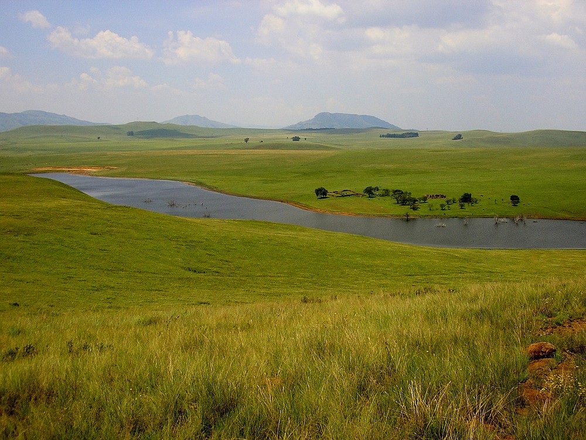
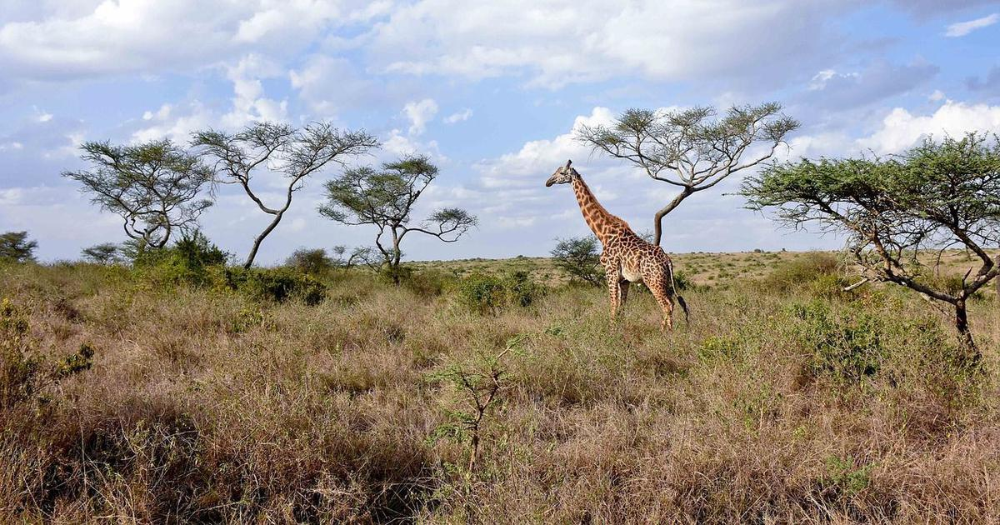

Savanna is grassland with scattered individual trees. Savannas of one sort or another cover almost half the surface of Africa (about five million square miles, generally central Africa) and large areas of Australia, South America, and India. Climate is the most important factor in creating a savanna. Savannas are always found in warm or hot climates where the annual rainfall is from about 50.8 to 127 cm (20-50 inches) per year. It is crucial that the rainfall is concentrated in six or eight months of the year, followed by a long period of drought when fires can occur. If the rain were well distributed throughout the year, many such areas would become tropical forest. Savannas which result from climatic conditions are called climatic savannas. Savannas that are caused by soil conditions and that are not entirely maintained by fire are called edaphic savannas. These can occur on hills or ridges where the soil is shallow, or in valleys where clay soils become waterlogged in wet weather. A third type of savanna, known as derived savanna, is the result of people clearing forest land for cultivation. Farmers fell a tract of forest, burn the dead trees, and plant crops in the ashes for as long as the soil remains fertile. Then, the field is abandoned and, although forest trees may recolonize, grass takes over on the bare ground (succession), becoming luxuriant enough to burn within a year or so. In Africa, a heavy concentration of elephants in protected parkland have created a savanna by eating leaves and twigs and breaking off the branches, smashing the trunks and stripping the bark of trees. Elephants can convert a dense woodland into an open grassland in a short period of time. Annual fires then maintain the area as a savanna.
The soil of the savanna is porous, with rapid drainage of water. It has only a thin layer of humus (the organic portion of the soil created by partial decomposition of plant or animal matter), which provides vegetation with nutrients. Savannas are sometimes classified as forests. The predominant vegetation consists of grasses and forbs (small broad-leaved plants that grow with grasses). Different savannas support different grasses due to disparities in rainfall and soil conditions. Because the savanna supports such a large number of species competing for living space, usually only one or a few kinds of grass are more successful than the others in a particular area. For example, in drier savannas such as those on the Serengeti plains or Kenya's Laikipia plateau, the dominant grasses on well-drained soils are Rhodes grass and red oat grass; throughout the East African savannas, star grasses are dominant; the lemon grasses are common in many western Uganda savannas. Deciduous trees and shrubs are scattered across the open landscape. One type of savanna common in southwestern Kenya, Tanzania, and Uganda, known as grouped-tree grassland, has trees growing only on termite mounds — the intervening soil being too thin or poorly drained to support the growth of trees at all. Frequent fires and large grazing mammals kill seedlings, thus keeping the density of trees and shrubs low. Savannas receive an average annual rainfall of 76.2-101.6 cm (30-40 inches). However, certain savannas can receive as little as 15.24 cm (6 inches) or as much as 25.4 cm (10 inches) of rain a year.
